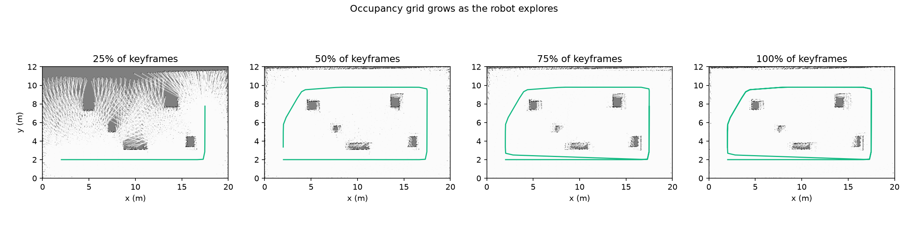

6.1为什么地图要做成栅格？
先回答"为什么不直接把点云存下来"。三个原因：
- 点云重叠无纪律：机器人路过同一面墙 100 次，存 100 份几乎相同的点； 查询"这个位置有没有墙"需要邻域搜索，而规划器（第 10 章）每秒要查询上万次。
- 噪声没有归所：单帧的噪点永远留在点云里；栅格按"证据"统计， 一次命中对抗不了 10 次穿越。
- 规划器天生爱栅格：A* 要的就是"格子可走/不可走"的离散世界（第 10 章直接复用本章产物）。
占据栅格 = 把世界切成 res × res 的方格（课程用 6 cm），
每格独立维护一个"占据概率"。它是 ROS 生态的地图标准格式（nav_msgs/OccupancyGrid），
也是 Cartographer / Gmapping 的输出形态。
6.2log-odds 更新：三行数学，五行代码
第 2 章已经推导过贝叶斯更新在 log 域是加法。落到建图场景，每帧激光给出一类证据：
| 格子的身份 | 证据（log-odds 增量） | 物理含义 |
|---|---|---|
| 光束打中的格子 | +0.85 | "这里有东西"（可能，但单帧不定论） |
| 光束穿过的沿途格子 | −0.40 | "这里肯定没东西"（很确凿） |
| 没被照到的格子 | 0 | 未知，保持 50% |
为什么"打中"是弱证据、"穿过"是强证据？因为光束打中某个格子，可能只是墙上一个噪点； 而光束能穿过一个格子直达 8 米外，几乎确凿说明这条路径是空的。 两个数值（0.85 / −0.40）就是第 2 章公式里的 $\log\frac{p(z|O)}{p(z|\neg O)}$，源自"测距噪声 σ=2 cm、误检率 ~3%"的传感器假设。
class OccupancyGrid:
def __init__(self, size, resolution=0.06, l_occ=0.85,
l_free=-0.40, l_max=4.0):
self.logodds = np.zeros((h, w)) # 0 = 完全未知
def update(self, pose, ranges, beam_angles, max_range):
"""用一帧激光更新地图：沿途 -l_free，命中 +l_occ"""
r = np.minimum(ranges, max_range) # 无回波 → 量程
steps = int(max_range / (self.res / 2))
t = np.linspace(0, 1, steps) # 沿光束的采样进度
pts = origin + t[None,:,None] * r[:,None,None] * dirs[:,None,:]
rr, cc = self._to_cell(pts[...,0], pts[...,1]) # 全部 → 格子坐标
free_mask = prog < r[:,None] - 0.02 # 命中距离之前 = 穿过
np.add.at(self.logodds, (rr[free_mask], cc[free_mask]), self.l_free)
np.add.at(self.logodds, (rr[hit], cc[hit]), self.l_occ)
np.clip(self.logodds, -self.l_max, self.l_max, out=self.logodds)
def probability(self):
"""显示时把 log-odds 映射回 [0,1]：p = sigmoid(l)"""
return 1.0 - 1.0 / (1.0 + np.exp(self.logodds))三个容易忽略的实现细节，每一个都是真实踩坑点：
- 无回波（inf）的光束只标 free、绝不标 occ——否则会在量程尽头刷出一圈"幽灵墙"。 课程第一版就犯过这个错，地图上满屋噪点。
- 命中格要回撤一小步（
r − 0.02再标 free）：浮点采样可能恰好越墙半格， 严格判断"严格早于命中距离"可防止墙后漏光。 - log-odds 饱和截断 ±4：一个格子被同一帧重复扫 100 次也不该"信仰锁死" （$p \to 99.9999\%$），否则后来的一帧强证据无法纠正它。±4 对应概率 98.2% / 1.8%，足够极端又保持可逆。

6.3光线追踪的两种实现
标记"沿途格子"有个经典算法问题：怎么知道光束穿过了哪些格子？两条路线：
| 方法 | 思路 | 优缺点 |
|---|---|---|
| 等步长采样（课程采用） | 沿光束每 res/2 米取一个点，落在哪个格算哪个格 | + 三行 NumPy 向量化，快且好懂 − 极端掠射角可能跳格（漏 1 格，影响可忽略） |
| Bresenham 直线 | 整数格点递推，逐格精确列出光束经过的格子序列 | + 数学上零遗漏，是像素/栅格绘图经典 − 纯 Python 循环慢，需 numba/向量化技巧 |
| 距离场预计算 | 把所有可能的 (角度, 距离) → 格子序列预先算好查表 | + 运行时零计算（嵌入式常用） − 内存换时间，角度量化需小心 |
课程选择采样法的决定性理由：能被 np.add.at 一次散射累加——
整帧 120 光束 × ~150 采样点在一条向量化流水线里完成，20 Hz 实时建图毫无压力。
练习 2 会让你亲手实现 Bresenham 对比两者。
6.4建图的三大质量杀手
inf 当成"在量程处命中"→ 房间中央出现一圈假墙。检查方法：把雷达遮挡住一角， 看被遮挡方向是否有"扇形幽灵"。修复：见 6.2 细节①。
用漂移的里程计位姿建图，同一面墙会被"画"在几个稍微错开的位置—— 第 8 章的对比图里你将看到触目惊心的双墙。这是位姿问题不是地图问题，位姿图优化（第 7 章）才是解药。
res 越小越精细，但格子越多、单帧覆盖越稀、更新越慢，噪声也越难被邻居平均掉。 经验公式：res ≈ 传感器噪声 σ 的 2~4 倍。σ=2 cm → res 4~8 cm，课程取 6 cm。
- 动态物体处理：l_free 绝对值大、l_occ 小 → 临时物体（走动的人）几帧就被"擦掉"， 这是栅格天然的"遗忘"机制，调两个系数即可获得。
- 子地图（submap）：Cartographer 把地图切成小块、每块独立建、位姿图负责拼—— 支撑了它的大规模建图。思路：局部建图用"帧-子图匹配"（更稳），全局一致性交给位姿图。
- 概率显示：ROS 里习惯用 −1 表示未知、0-100 表示占据率，本质是同一个东西换了个皮肤。
6.5动手实验
- 把
l_occ调成 3.0（强信仰）：单帧命中就几乎锁死为墙。 再把激光噪声 σ 调大 5 倍，观察地图上"钉子户"般的噪点——证据权重和噪声水平要匹配。 - 把
l_max调成 50：跑两圈后人为挪动机器人起点重跑一遍， 体会"信仰锁死"为什么让地图无法自我修正。 - 第 8 章跑通完整流水线后，回来做一个对照实验： 用里程计位姿 vs SLAM 位姿各建一张图（run_slam.py 已内置这张对比图 fig_map_compare.png）。
- 能从贝叶斯定理推出 log-odds 加法更新（不看笔记，3 行内）
- 说出 l_occ / l_free / l_max 三个超参数的含义与合理量级
- 知道"无回波只标 free"和"饱和截断"两个细节为什么生死攸关
- 能解释双鬼影是位姿问题、要在第 7 章解决
练习 1 · 推导 l_occ / l_free 的原始来源
练习 2 · 实现 Bresenham 版 update() 并对比
dx=|x1−x0|, dy=|y1−y0|，步进方向由误差项
err = dx−dy 决定，每步 e2=2*err 判定走 x 还是走 y。
写成 update_bresenham() 后用 %timeit 对比：
纯 Python 循环慢 20–50 倍，但若用 numba @njit 或批量预生成索引矩阵，差距缩到 2 倍以内。
两者建出的图差异应在 1–2 个格子宽度的阴影级别——视觉几乎不可分辨。